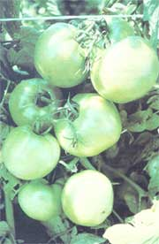
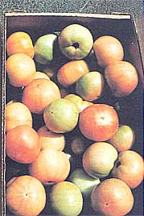
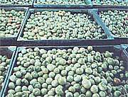
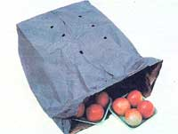
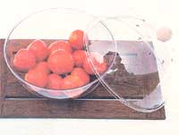

Issue # 73- January/February 1982
You can enjoy the flavor of fresh-from-the vine fruit...even in the dead of winter!
PHOTOS BY THE AUTHOR
"Mature green" tomatoes are ideal for ripening indoors.
and shipped to the supermarkets when their skins begin to turn pink.
Commercially grown winter tomatoes are harvested when gree.
In cubate such globes in a punctured paper sack.
or in a plastic ripening bowl until they're red, juicy, and flavorful.
David Gustafson
When January arrives, and-throughout the greater part of North America-there's no longer any doubt that freezing temperatures have set in to stay for a spell, gardeners begin hankering for fresh fruits and vegetables. And heading the list of most folks' cold-weather cravings is a yen for the succulent, juicy flavor of a homegrown tomato. Unfortunately, though, by this time of year most backyard growing plots are resting under a winter blanket of mulch. So-unless you're lucky enough to boast a greenhouse full of the ripening globes-you're forced to either raid the pantry for a jar of cooked tomatoes, scavenge (in southerly climes) in the root cellar for the remaining picked-before-frost green specimens, or bundle up and tradge to the grocery store to buy a not very red or juicy version of the tangy fruit.
But cold weather needn't put a stop to your supply of "fresh" tomatoes. The good-sized green ones that were rescued from your autumn garden can be ripened indoors... and even the hard (and generally pretty much tasteless) pinkish variety found in the supermarket can be coaxed to a ruby-red hue that will bright en up a midwinter salad. Whether you gamer your tomatoes from the basement or from the local grocery store, the trick to bringing out their full, robust flavor is the same: Simply give the pale produce a period of final ripening before you eat it. You'll find that, when the tomatoes are "cured" under the proper conditions, their taste will approach that of their vine -ripened siblings.
PICKING AND STORAGE TIPS
The flavor of your indoor-ripened tomatoes will be determined not only by the treatment the fruit receives in-its final stage of maturing, but also by the methods used for picking and storing the crop. Therefore, if you're still lucky enough to have any green tomatoes gathered from the late-fall garden, you'd be wise to glance over this next section to make certain that your stockpile is stowed properly.
Green tomatoes, of course, should be picked before the first frost. The best tomatoes for indoor finishing are those from youngish plants in their prime rather than from vines that have been bearing all season (fruit from late-starting volunteers is usually ideal for this purpose). Only tomatoes that are shiny green or mottled pink-and-green should be harvested ... the smaller, fluted, white tomatoes do poorly indoors, so it's better just to leave them on the vine.
Once you've brought the last-minute harvest inside, remove any stems to prevent the woody ends from puncturing neighboring pieces of fruit. Next, sort the tomatoes, setting the riper ones aside so that they won't be bruised by the harder green produce.
At this point, it's necessary to take an inventory of the unripened haul. If you have a good number of green tomatoes, you'll most likely want to set some of them in storage to mature gradually for use at a later date. To put such surplus fruit on "hold" for several weeks, you should store it at 55° to 60°F (the tomatoes will ripen in about a month at these temperatures). If kept below 50° though, the fruit will likely go soft without ever turning red.
If-on the other hand-you'd like to encourage ripening, but still want to store the tomatoes out of the way in the root cellar, try placing a few apples among the green spheres. As tomatoes mature, you see, they naturally release ethylene gas, which acts as a ripening hormone. This colorless hydrocarbon is also emitted by other fruits (such as apples). So if you increase the concentration of ethylene gas in a closed area (as you do by adding the apples), the tomatoes will often age more rapidly. Then, when their green skins begin to turn pink, transfer them to a warmer area, such as the kitchen, to complete the ripening process.
Of course, if-as most folks must-you're gathering your midwinter supply of fresh tomatoes from the supermarket, you'll have little control over picking and storage procedures. However, the commercial method of marketing the winter fruit is surprisingly similar to the "save from the frost" technique just described. All the tomatoes intended for shipment to the colder climes are picked at either the mature green or the pink stage. A "mature green" is a full-sized tomato just turning from a dark to a lighter green . . . while a "pink" (or "breaker") is at a more developed phase and is beginning to blush from green to red (or orange, depending on the variety).
Breakers go directly to market ... before they ripen any further and become susceptible to bruises or rot during shipping. The mature greens, however, are stored for three days-at controlled temperatures ranging from 65° to 75°F-in a "ripening room". During this incubation period the tomatoes are bathed to ethylene gas to accelerate the ripening process. When the mature greens start to turn, they're hustled from their chambers to the stores, and it's then up to the consumer to complete the aging of the fruit.
RIPENING RULES
Transforming hard, pinkish tomatoes into juicy red beauties is easy . . . as long as you steer clear of the two most common errors that people make when attempting to ripen winter fruits and vegetables. First, don't refrigerate the edibles, and second, don't place them in direct sunlight . . . because cold will inhibit the ripening process, while hot temperatures will overhasten the aging. Either way, you'll end up with an insipid, mushy product.
Instead, it's best to place the tomatoes in a bowl (or set them, in a single layer, on a table) away from direct sunlight but in a warm room (a temperature between 65° and 75°F is ideal). It normally takes about a week for the pinks to ripen fully under such conditions. You can accelerate the process by placing the mottled globes in a commercially made ventilated, plastic fruit-ripening bowl (these are available at some supermarkets or kitchen supply stores)... or simply poke half a dozen small air vents in a paper grocery sack and leave the tomatoes inside the homemade incubator for a few days. Humidity is extremely important at this stage, with 90% being the target figure (you'll likely approximate this percentage when using a ripening bowl or a punctured paper bag). If it's above 94%, the humidity will encourage the growth of micro-organisms. Below 85%' it will cause the fruit to shrivel. Be sure to check the containers every day to harvest the ready-for-eating tomatoes.
Whether you "indoor ripen" your own stash of stored garden bounty or incubate the underage fruit gracing January's supermarket shelves, you'll find that the slight extra effort involved in proper curing will be well rewarded when you bite into a red, bursting-with-flavor tomato this winter . . . while cold winds still howl outside in the garden!
|
 |
 |
 |
|
 |
 |
|